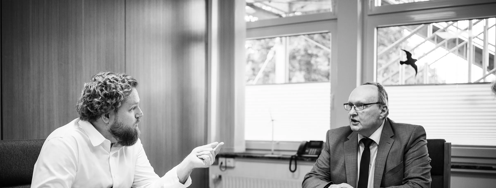

Blog
Aus dem Alltag
Was bei uns gerade läuft, was schiefging und was wir daraus gelernt haben. Dazu Videos, in denen ich meine Flows Schritt für Schritt zeige.
Über 250 Flows. Was ich dabei gelernt habe.
Bei uns laufen über 250 Flows, jeden Tag rund 10.000 Mal. Hier ist, was ich dabei gelernt habe – inklusive der Fehler, die ich nicht noch einmal machen würde.
WeiterlesenIch klicke nur noch auf „Ja“
Social Media war bei uns lange das Thema, das immer hinten runterfiel. Heute schlägt eine Maschine vor, ich gebe frei – und der Rest passiert von allein.
Papier findet allein sein Ticket
Unser Scan-Eingang war ein schwarzes Loch. Dateien hießen „Scan_0047.pdf“, und wer etwas gesucht hat, hat zehn Dateien geöffnet. Heute sortiert sich das Papier selbst.
Die Belege buchen sich fast von selbst
Belege suchen, zur Freigabe schicken, nachfragen, kontieren, in SAP abtippen. Bei uns hat sich das in einem Jahr komplett verändert – mit einem Flow, der inzwischen größer ist als alle anderen.
Liquidität um 7 Uhr statt am Monatsende
Die Frage „Wie sieht es in sechs Wochen auf dem Konto aus?“ hat bei uns früher einen halben Vormittag gekostet. Heute liegt die Antwort jeden Montag vor dem ersten Termin bereit.
Montags tippe ich keine Zahlen mehr ab
Kaffee holen, drei Systeme aufmachen, Zahlen in eine Excel tippen. Das war lange mein Montagsritual. Heute sind die Zahlen da, bevor ich es bin.
Sicherheitslücken kennen, bevor der Kunde anruft
Früher hing es davon ab, wer gerade die Nachrichten liest. Heute prüft ein Flow jeden Werktag, ob eine aktiv ausgenutzte Lücke einen unserer Kunden betrifft.
Was brennt? Um 7 Uhr weiß ich es.
Der erste Blick ins Postfach am Morgen war bei mir oft der falsche. Heute beginnt der Tag mit einer kurzen Zusammenfassung – und mit einer Entscheidung statt mit Suchen.

Die Dispo hat keinen Zettel mehr
Jedes Systemhaus hat diese eine Person, die alles im Kopf hat. Wir haben einen Teil davon in einen Flow gepackt – damit die Dispo wieder dirigieren kann, statt hinterherzutelefonieren.
Was wir leisten, kommt jetzt auch auf die Rechnung
Jedes Systemhaus kennt das Gefühl, mehr zu arbeiten, als am Ende abgerechnet wird. Wir lassen jede Ticketzeit automatisch prüfen – und haben dabei einiges über uns gelernt.
Taktcheck
15 Minuten, die sich lohnen.
Nach unserem Gespräch wissen Sie, wo Sie Zeit verlieren, was sich automatisieren lässt und was es ungefähr kostet. Oder ich sage Ihnen ehrlich, dass es sich nicht lohnt.
- kostenlos, per Video
- ohne Vorbereitung
- kein Verkaufsgespräch
- mit kurzer Notiz danach